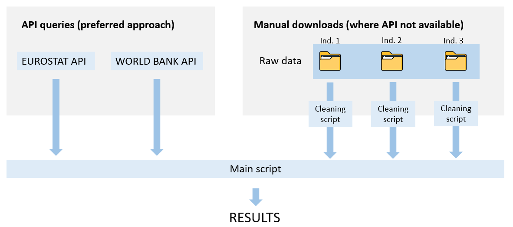
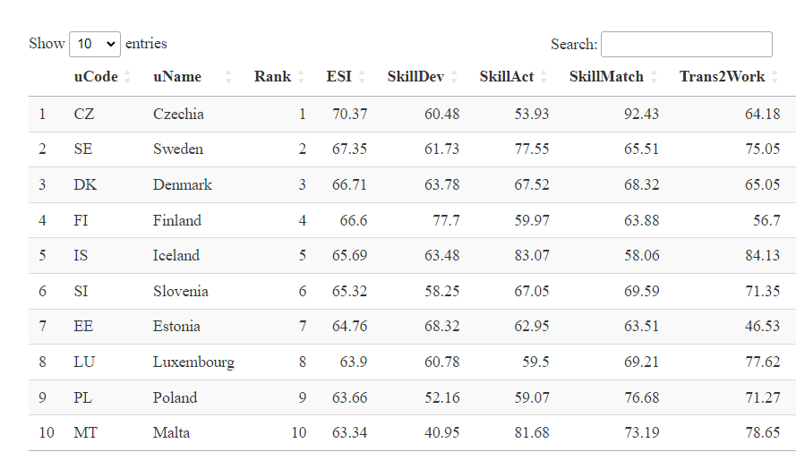
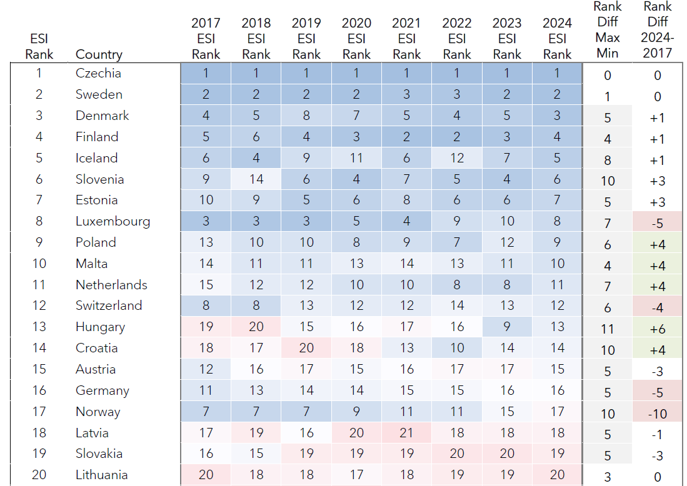
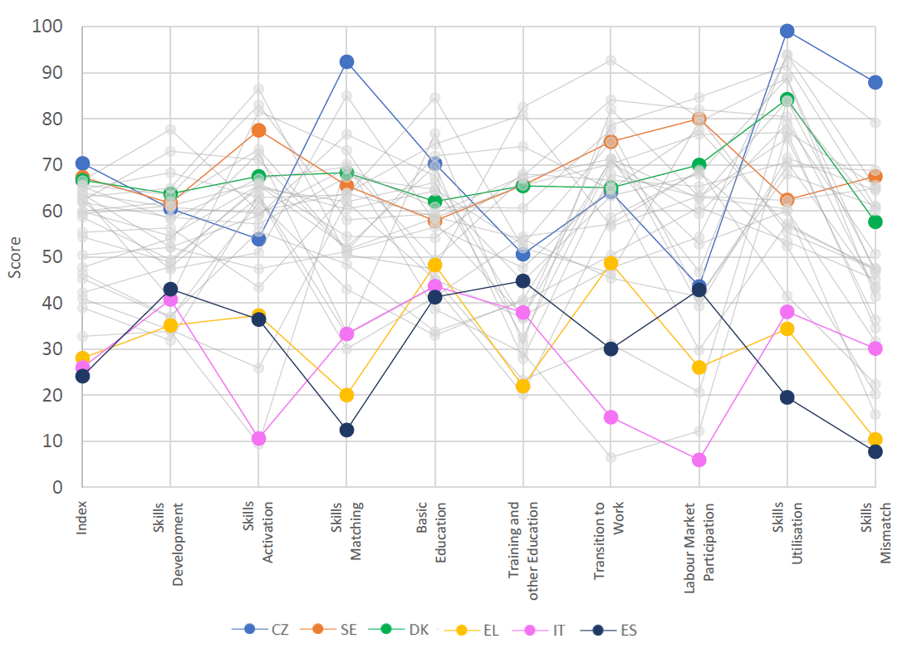
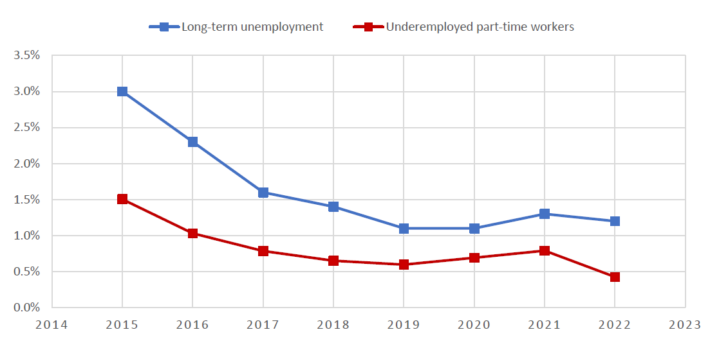
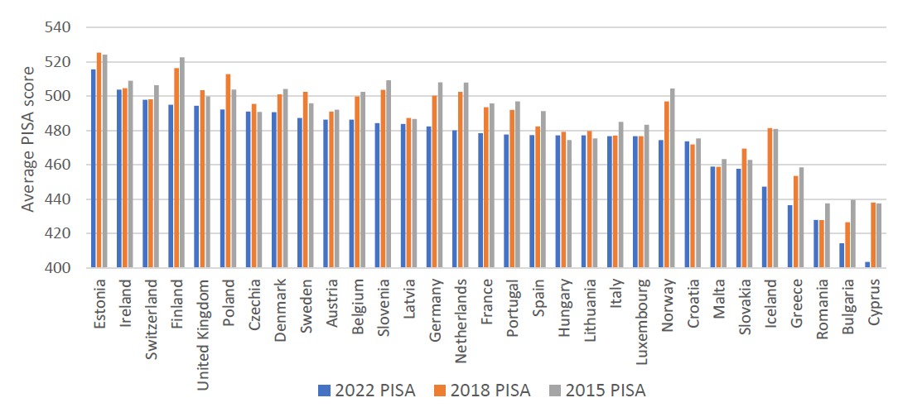

library(eurostat)
# clean cache if necessary
eurostat::clean_eurostat_cache()
# Ratio of pupils and students to teachers and academic staff at the pre-primary education level (ISCED11 level 0, 3 years to the start of primary education, Eurostat code educ_uoe_perp04)
PTRatio <- get_eurostat("educ_uoe_perp04", time_format = "num", filters = list(isced11 = "ED02"))
# Share of population aged 15-64 with at least upper secondary education (ISCED11 level 3-8, Eurostat code edat_lfse_03)
SecEd <- get_eurostat("edat_lfse_03", time_format = "num", filters = list(sex = "T", age = "Y15-64", isced11 = "ED3-8"))
# Share of population aged 25-64 who stated that they received formal or non-formal education or training in the four weeks preceding the survey.
RecTrain = get_eurostat("trng_lfse_01", time_format = "num", filters = list(sex = "T", age = "Y25-64"))
# Share of the population at ISCED11 level 3 attending vocational training (Eurostat code educ_uoe_enra13)
VET <- get_eurostat("educ_uoe_enra13", time_format = "num", filters = list(isced11 = "ED35"))
# Share of individuals who performed more than one activity in all skills domain (information, communication, problem-solving, software) Eurostat code isoc_sk_dskl_i
DigiSkill <- get_eurostat("isoc_sk_dskl_i", time_format = "num", filters = list(indic_is= "I_DSK_AB", unit = "PC_IND", ind_type = "IND_TOTAL"))Happy to say that the latest edition of the European Skills Index (ESI) was launched yesterday. I have worked on this project with Hedvig Norlén for the past few months to update the ESI with the latest data. As with all the composite indicators that I work on these days, I am trying to create a data pipeline that is as reproducible and automated as possible, and to minimise the chance of errors. Here’s what I did in this case.
Data collection
The ESI is composed of 15 indicators. Of these, 11 come from Eurostat, which means we can use the rather handy Eurostat package which is an easy R interface for the Eurostat API. This means the data can be directly imported from Eurostat’s database into R, without any intermediate downloads. It took me a while to get the exact indicator codes for each indicator, since these were not always clear from the previous releases, and in some cases we had to do some cross checking with previous data to figure out exactly what indicators were used. In the end the data was downloaded like this:
I have cut this short to avoid a very long code chunk, but you get the idea. This process results in a set of data frames which I wrap as a list. In each case I download as much historical data as possible. The advantage of using the API, among others, is that the data arrives clean as a whistle and there is very little to do to get it in the format you need.
Next I brought in the other four indicators which were collected by colleagues at Fondazione Giacomo Brodolini and passed as Excel files. I wanted to make the methodology behind each indicator as reproducible as possible, so I put each of these indicators in a separate folder, each with its own R script which reads the untouched data and outputs a csv file in a standardised format with a consistent naming convention.

Finally in my central R script I import the four non-API indicators and merge them with the data collected via APIs. This results in a cleaned and updated data set spanning all 31 countries and going from 2015-2022. In fact some indicators go back further but the data gets too patchy. Still, 8 index years is already good!
Data validation
It’s super-important to be sure that the data you collected is the correct data. Otherwise you risk someone spotting this after the launch and then… well, let’s just say it’s better to check thoroughly first.
The last round of data collection for the ESI (before I was involved) collected data from 2020 all the way back to before 2015. This meant I had several years of data to compare for each country and indicator. Using R (of course) I compared every data point (year-country-indicator combination) and calculated the differences between the two data sets. This identified a few issues:
- Indicator codes which I had slightly mistaken
- Manual data collection which needed some adjustments
- Cases where the previous methodology was not very clearly described
After some iterations we were able to fix all of these problems. The result here was a completely clean and validated data set. We noted that as expected, some time series for certain countries had been revised by Eurostat, creating minor differences here and there.
Replicate methodology
Next step was to be able to replicate the ESI methodology precisely in R. Previous editions of the ESI had been calculated with a rather nice Excel tool, but this was a bit stretched to handle multiple years of data, and is hard to follow. Instead, I recreated the methodology using my ever-evolving COINr package in R. COINr is already highly flexible and can handle most composite indicator tasks that you throw at it, but I had to modify the package to allow linear time-series imputation for missing data. Then, COINr was used for the following steps:
- With the validated data set, fill in missing values using linear time-series imputation, or else the latest available data point.
- Normalise using a “distance to frontier” approach.
- Aggregate using a mixture of arithmetic and geometric weighted means.
To validate the methodology, I took the data set used in the previous edition and used R to calculate the results, then cross-checked each data point at each step against the previous results. COINr was able to exactly reproduce the results.
Calculate index
At this point I have both a validated data set and validated methodology. Since COINr is flexible to the the number of countries and the number of years in the data set, I simply feed the validated data into the same commands that were used when replicating the results in the previous step. The high-level commands are in fact very simple:
library(COINr)
# assemble coin
ESI <- new_coin(iData, iMeta, split_to = "all", level_names = c("Indicator", "Sub-pillar", "Pillar", "Index"),
retain_all_uCodes_on_split = TRUE)
# impute data with linear interpolation
ESI <- Impute(ESI, dset = "Raw", f_i = "impute_panel", f_i_para = list(imp_type = "linear"))
# normalise with distance to frontier normalisation using params in iMeta
ESI <- Normalise(ESI, dset = "Imputed",
global_specs = list(f_n = "n_goalposts", f_n_para = "use_iMeta"),
global = FALSE)
# aggregate using mixture of arithmetic/geometric mean
ESI <- Aggregate(ESI, dset = "Normalised", f_ag = c("a_amean", "a_amean", "a_gmean"))Of course, this hides a lot of complexity that is going on behind the scenes. But this ought to be the point of a good R package, IMHO :)
At this point I can have a peek at the results.

What we end up with is a results table for each year, from 2015-2022.
Outputs and exports
Last thing to do is to export to the various formats needed. In this case this consisted of:
- Results for all years exported as a formatted Excel workbook.
- Long-form csv of results to pass to web developers for the online portal.
- Automatically generated texts describing each country.
The texts were an interesting one. Rather than manually writing 31 pieces of text, I wrote a template which was populated by variables which were calculated for each country. This was a little tricky because when describing changes we may need different sentence constructions for positive, negative, or no changes, for instance. The output template looked like this:
glue::glue(
"# {country_name}
{country_name} ranked {to_ord(ESI_rank)} of 31 countries in the European Skills Index in 2024, with a total score of {ESI_score}. At the pillar level, it ranked {skdev_rank} in Skills Development (score: {skdev_score}), {skact_rank} in Skills Activation (score: {skact_score}) and {skmat_rank} in Skills Matching (score: {skmat_score}).
The highest-ranking indicators of {country_name}, in comparison with other countries, are {itop1_name} ({itop1_val}, rank {itop1_rank}) and {itop2_name} ({itop2_val}, rank {itop2_rank}). On the other hand, its weakest indicators are {ibot1_name} ({ibot1_val}, rank {ibot1_rank}) and {ibot2_name} ({ibot2_val}, rank {ibot2_rank}).
Over the last seven years the overall rank of {country_name} has {ESI_rankchange_snippet}. In that time, its overall score has {ESI_scorechange_snippet}. {indicator_increases_snippet}. {indicator_decreases_snippet}.
Note that these figures may refer to imputed data points.
"
)Of course this excludes quite a lot of code previously where I calculate the values and text snippets for each country. To get the output I just loop this template over all countries, then glue everything together into one big text file.
Last thing was, we anyway pasted the latest data into the Excel tool mentioned previously to calculate the results in parallel in Excel (which is for internal Cedefop use). Then, we wrote the methodological report, which can be found here. A couple of figures follow.




Thoughts
I think this is getting towards a fairly good template for building a composite indicator. Rather than doing all of this in one giant script, the work was split into five Quarto (R) notebooks:
- Data collection
- Data validation
- Methodology replication
- Index calculation
- Exports
I strategically save the outputs of each to files, so that I don’t have to re-run the whole thing each time I make a change. This seems like a good strategy. Still fine-tuning things though!
The ESI was good to work on because it is a well-established methodology, which allows to focus a bit on the data pipeline and technical implementation. I will definitely be reusing some of the ideas here in future work.